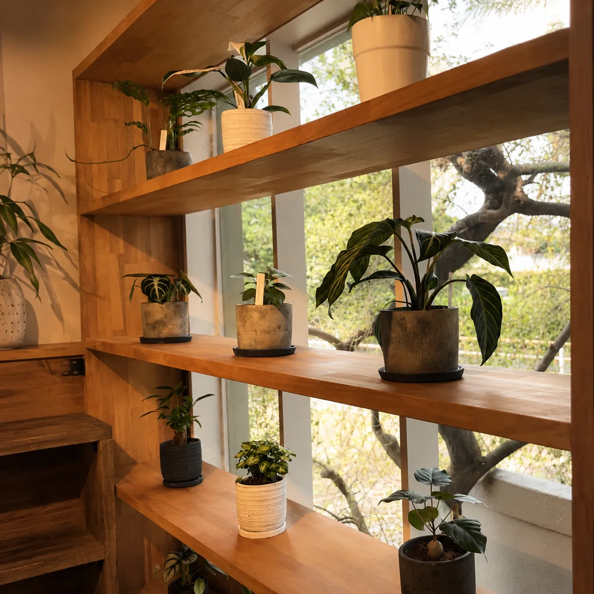

鉢カバーの選び方｜サイズ合わせと部屋になじませるコツ

買ってきた観葉植物のプラスチック鉢、そのまま飾るか迷っていませんか。この記事では、鉢カバーのサイズの測り方、素材ごとの特徴、根腐れを防ぐ水やりのコツを、熊本の季節に合わせてまとめました。
鉢カバーとは？植え替えとどう違う？
鉢カバーは、植物が植わっている鉢を、そのまま中に入れて使う「外側の器」です。底に穴のない容器が多く、プラスチックの鉢を隠したり、部屋の雰囲気に合わせて見た目を変えたりするために使います。
植え替えとのいちばんの違いは、植物の根や土に触れないことです。植え替えは根を一度動かすので、株に少なからず負担がかかります。時期も選び、真夏や真冬は避けるのが一般的です。鉢カバーなら、買ってきた鉢のまま入れるだけなので、季節を問わずその日から見た目を整えられます。
- 買ってきたプラスチック鉢のデザインが部屋に合わない
- 植え替えの時期ではないが、見た目を変えたい
- 床や棚を水や土の汚れから守りたい
- 季節や模様替えに合わせて、器だけ取り替えたい
こんなときに役立つのが鉢カバーです。中の鉢はそのままなので、気分が変わったら器だけ別のものに替えられるのも気軽なところです。
サイズはどう選ぶ？号数と高さの合わせ方
鉢カバー選びで最初に確かめたいのは、サイズです。小さすぎると鉢が入らず、大きすぎると中で鉢が傾いたり、隙間が目立ったりします。
鉢の大きさは「号」で表されることが多く、1号はおよそ直径3cmが目安です。たとえば6号鉢なら直径18cm前後、8号鉢なら24cm前後になります。鉢カバーは、中の鉢より一回り大きいものを選ぶと、出し入れしやすく、見た目もすっきりまとまります。
- 今の鉢の上の縁の直径を測る（いちばん広い部分）
- 鉢の高さを測る（受け皿ごと入れるなら、受け皿の直径と、受け皿を含めた高さも）
- カバーの「内側」の直径が、鉢より2〜4cmほど大きいものを目安に選ぶ
たとえば直径18cm・高さ16cmの6号鉢なら、内径20〜22cm、深さ15〜17cmくらいのカバーがひとつの目安です。号数だけで買わず、内寸と形で確かめるのが失敗しないコツです。
形にも注意が必要です。入口がすぼまった壺のような形や、底に向かって細くなる形は、内径の数字が足りていても鉢が途中でつかえることがあります。指が入る程度の余裕があると、出し入れも水の確認も楽になります。
高さは、中の鉢の縁がカバーの縁とそろうか、少し下に隠れるくらいが自然に見えます。カバーが浅いと中のプラスチック鉢がのぞき、深すぎると植物が沈んで見えます。深すぎるときは、底に水に強い台を敷いて高さを調整する方法もあります。
背の高い植物や、葉が片側に広がった植物は、重心が高くなりがちです。カバーの底が広く安定したものを選ぶと、倒れる心配が減ります。
素材ごとの特徴は？陶器・金属・かご・セメント
素材は、見た目の印象だけでなく、重さや水への強さも変わります。置く場所と植物の大きさを思い浮かべながら選びます。
- 陶器：色や形が豊富で、しっかりした重さがあり安定します。落とすと割れやすいので、置き場所を決めて使う方に向いています。
- 金属（ブリキ・アルミ・スチールなど）：軽くてすっきりした印象です。水に濡れたままにすると、さびが出ることがあります。
- かご・麻・木などの自然素材：やわらかく、北欧風やナチュラルな部屋になじみます。水に弱いものが多いので、内側にビニールや受け皿を入れて使います。
- セメント・コンクリート：重厚感があり、大きな植物も安定します。重いので、移動するときに床を傷つけないよう注意が必要です。
- プラスチック・樹脂：軽く、水洗いしやすく、値段も手ごろなものが多い素材です。最近は陶器風・石風の質感のものもあります。

迷ったときは、「床に置く大きな植物は重めで安定する素材」「棚や窓辺の小さな鉢は軽めで動かしやすい素材」と分けて考えてみてください。
素材名だけで水への強さは決まりません。同じ陶器でも、内側に釉薬（うわぐすり）がかかっていないと水がしみることがあります。床やテーブルに直接置くなら、商品の説明で「防水」「水漏れしにくい」といった表示や内側の仕上げを確かめ、分からないときは内側に受け皿を入れておくと確実です。
水やりはどうする？底穴なしでも根腐れを防ぐコツ
鉢カバーで一番気をつけたいのが、水やりです。鉢カバーは底に穴がないものが多いため、鉢から流れ出た水がカバーの中にたまります。そのままにしておくと、鉢の底が水につかった状態が続き、根が傷む「根腐れ」の原因になります。
いちばん確実なのは、水やりのときに鉢をカバーから出すことです。
- 鉢をカバーから取り出し、シンクやベランダに運ぶ
- 鉢底から水が流れ出るまで、たっぷり水をあげる
- 水が切れるまでしばらく置いてから、カバーに戻す
大きな鉢で毎回持ち上げるのが大変な場合は、水やりのあとにカバーの中をのぞいて、たまった水を捨てる習慣をつけておきます。スポンジや布で吸い取る方法なら、鉢を動かさずに済みます。隙間が狭くて手が入らない場合は、灯油ポンプのような手動のポンプで吸い出すこともできます。
カバーの底に、中の鉢を安定して支えられる台を入れて鉢を浮かせておくと、たまった水に鉢底が直接つかりにくくなります。ただし、浮かせても水は捨てる必要があります。
大きな植物の場合は、買う前に「このカバーから鉢を出せる重さか」「隙間から水を確かめられるか」も考えておくと、あとで困りません。
水やりの頻度そのものは、植物の種類と季節で変わります。冬の水やりの減らし方は冬の観葉植物の管理でまとめています。
部屋になじませるには？色・質感・置き場所のコツ
鉢カバーは、植物の「服」のようなものです。同じ植物でも、カバーの色や質感で部屋の中での見え方が大きく変わります。
まず決めたいのは、植物を目立たせたいのか、部屋になじませたいのかです。
- なじませたいとき：床や家具の色に近い色（木目、ベージュ、グレーなど）を選ぶ
- 植物を主役にしたいとき：白や黒など、葉の緑が引き立つシンプルな色を選ぶ
- 部屋のアクセントにしたいとき：くすんだ青や黄色など、クッションや小物と色をそろえる
北欧風のインテリアなら、白やグレーの陶器、明るい木、かごなどの自然素材がよく合います。いくつもの鉢を並べるときは、素材か色のどちらかをそろえると、ばらばらな印象になりにくくなります。

色や質感を選ぶのは、鉢がきちんと収まって安定することを確かめてからです。そのうえで、置き場所との相性も見ておきます。床置きの大きな植物には、低めで底の広いカバーを。棚の上の小さな鉢は、少し高さのあるカバーにすると目線に入りやすくなります。日の当たる窓辺に置く場合は、布やかごより、陶器や金属のほうが色あせを気にせず使えます。
雑貨との組み合わせは北欧雑貨の選び方も参考にしてください。
熊本の夏と冬、鉢カバーで気をつけることは？
熊本は、夏は気温も湿度も高く、冬は明け方にぐっと冷え込む日がある土地です。鉢カバーを使うときも、季節ごとに少し気をつけたいことがあります。 鉢カバーに合わせる植物や鉢を熊本で探すときの見方は、熊本で観葉植物を買うなら｜植物屋・園芸店の選び方にまとめています。
夏は、カバーの中に湿気がこもりやすくなります。特に梅雨から夏にかけては、カバーの中にたまった水が乾きにくく、蒸れやにおいの原因になりがちです。水やりのあとにたまった水を捨てるのはもちろん、ときどき鉢を出してカバーの中を乾かしておきます。金属のカバーは直射日光で熱くなることがあるので、強い日差しが当たる窓辺は避けたほうが無難です。
冬は、カバーの中にたまった水が冷えると根に負担がかかるため、水をためないことがいっそう大切になります。窓辺の夜の冷え込みが気になるときは、夜だけ部屋の内側に移すのも一つの方法です。
まとめ
鉢カバーは、植え替えをしなくても、植物の見た目を手軽に部屋に合わせられる道具です。選ぶときは、次の順番で考えると迷いにくくなります。
- 中の鉢の直径と高さを測り、一回り大きい内寸のものを選ぶ
- 置く場所と植物の大きさに合わせて素材を決める
- 部屋になじませたいか、目立たせたいかで色を決める
使い始めてからは、水やりのあとにカバーの中に水が残っていないかを見ること。鉢カバーを使うときに、これがいちばん大切な確認です。
HYGGEでは、観葉植物と一緒に、暮らしになじむ雑貨もご用意しています。お手持ちの鉢に合う器を探したいときは、鉢の直径と高さを控えておいていただくと、ご相談がスムーズです。
よくある質問
- 鉢カバーと受け皿は両方必要ですか？
- 底穴がなく、水漏れしないことが確かめられるカバーなら、受け皿なしで使えることが多いです。防水かどうか分からないカバーや、かご・布などの水に弱い素材を使う場合は、内側にプラスチックの受け皿を入れておくと確実です。
- 素焼き（テラコッタ）の鉢も鉢カバーに入れていいですか？
- 入れて使えます。ただ、素焼きは鉢の側面から水分が抜けるのが良さなので、カバーに入れると乾きが遅くなることがあります。土の乾き具合を指で確かめながら、水やりの間隔を見直してください。
- 底穴のない鉢カバーに、直接土を入れて植えてもいいですか？
- おすすめしません。余分な水の逃げ場がないため、土の中に水がたまり、根腐れしやすくなります。植えるなら底穴のある鉢に植え、その鉢ごとカバーに入れて使ってください。
- 鉢カバーが少しゆるくて、中で鉢がぐらつきます。
- 深さが足りないだけなら水に強い台で高さを調整できますが、横のぐらつきは台では直りにくいです。大きな植物は倒れる心配もあるので、内径が合うカバーに替えるのが確実です。
HYGGE（ヒュッゲ）のお店
観葉植物と北欧雑貨のお店です。実物を見て選びたい方は、お気軽にお立ち寄りください。
熊本市南区幸田1丁目7-15／11:00〜17:00（水・土定休）／駐車スペースあり